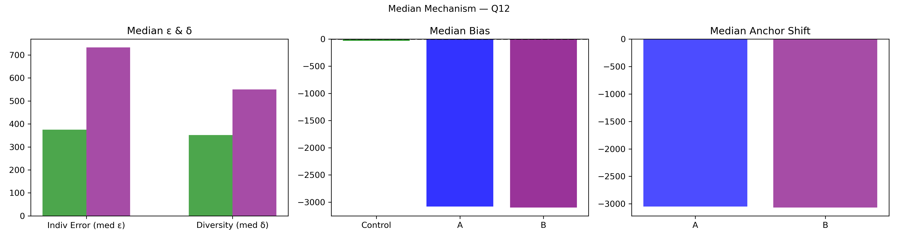

Question Q12: How many likes will @Sothebys last Instagram post today get by 17:00 ET tomorrow?
Super Summary
================================================================================
QUESTION Q12: 02_Export_0620_stats_wyNJpvIEx7.csv
How many likes will @Sothebys last Instagram post today get by 17:00 ET tomorrow?
Truth = 3110.0
N_ctrl = 136 N_ext = 82
================================================================================
[1] COLLECTIVE ERROR (E)
Control Ec: 3655.6979 ± 4492.5302
CI = [ 9.7787 , 16198.3564 ]
Extremized Ex: 81.3262 ± 59.4796
CI = [ 3.3405 , 214.5546 ]
Difference (Ec - Ex) = 3574.3717
Percent Change = 97.78%
Bootstrap:
P(Ex < Ec) = 0.7760
→ 77.6% of samples show extremized < control
[2] INDIVIDUAL ERROR (ε)
Control mean ε = 3989.3015
Extremized ε = 704.1341
Percent Change = -82.35%
Welch t-test: t = 1.002, p = 0.3181
Cohen's d = 0.109
[3] DIVERSITY (δ)
Control SD = 38155.0564
Extremized SD = 772.4661
Percent Change = -97.98%
Levene p = 0.4348
[4] ANCHOR DIAGNOSTICS
Anchor A = 2228.0
Anchor B = 3928.0
A_effective = False
B_effective = False
[5] EQUATION 6 CHECK
w_L = 0.9328 w_H = 1.0646
Delta = 6620.4157
Criterion_L = True Criterion_H = True
Meets both = True
[6] δ–ε–E SCENARIO
Scenario: δ:down, ε:down, E:down
Mechanism Explanation: Calibration: anchors pull predictions inward toward the truth, reducing both individual error and diversity and improving collective accuracy.
================================================================================
FINAL INTERPRETATION (with actual figures)
================================================================================
For Q12, collective error shifted from 3655.70 to 81.33 (97.78%). Bootstrap = 77.6%. Individual error changed by -82.35%, diversity changed by -97.98%. Scenario = δ:down, ε:down, E:down. Equation 6 feasibility = True.
================================================================================
Median Mechanism Plot
